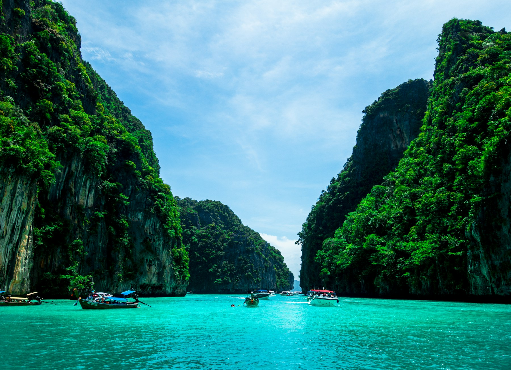

De reisgegevens konden niet worden geladen. Ververs de pagina om het opnieuw te proberen.
Een beetje dichter bij het paradijs.
Onze eerste grote reis, samen met jullie.
THAILAND 2027
29 nachten. 11 bestemmingen. Eén onvergetelijke reis.
tot ons avontuur begint
Onze reisroute 11 stops
Eiland na eiland. Herinnering na herinnering.
29 nachten om naar uit te kijken
18 januari — 16 februariOns reisdagboek
Het mooiste verhaal moet nog beginnen.
Voor nu genieten we van de voorpret. Straks delen we hier onze belevenissen, kleine momenten en mooie ontdekkingen.
Nog geen reisverslagen gepubliceerdVoorpret in beeld
Sfeerbeelden · eigen reisfoto’s volgen onderweg
Onze reisroute
11 bestemmingen. 29 nachten. Onze eerste grote reis.
De Andamanse kust
Van Phuket Town tot Klong Muang Beach. Tik op een nummer voor de bestemming en verblijfsdata.
Onze reiskosten
We delen de bedragen en verhalen achter onze reis.
Kosten per categorie
Klik op een categorie om de uitgaven te filteren.
Betaald en nog te betalen
Vliegtickets, stoelreserveringen en Pearl Hotel Phuket zijn voldaan. Krabi Front Bay Resort is bevestigd: circa € 141,05 voor 3 nachten, nog te betalen in USD op 10 januari 2027. Het definitieve eurobedrag kan afwijken door de bankkoers en wisselkosten. Toekomstige, nog niet geboekte kosten zijn niet inbegrepen.
Het ticketbedrag moet nog met de originele factuur worden gecontroleerd. Voor US$ 103,32 aan hotelkosten gebruiken we een indicatieve rekenkoers van € 0,92 per dollar. Geen livekoers.
Dit hebben we al geboekt
Ons reisdagboek
De verhalen achter de foto’s.
Het mooiste verhaal moet nog beginnen.
Er zijn nog geen reisverslagen gepubliceerd. Straks delen we hier onze eerste grote reis.
Foto’s & video’s
Nu nog sfeerbeelden van Thailand. Eigen reisbeelden volgen tijdens de reis.



Reis met ons mee
Volg ons eerste grote avontuur en stuur de voorpret door.
Piet & Petra op reis
Onze route, reiskosten en straks onze verhalen, foto’s en video’s. Bewaar deze pagina of volg ons op Instagram.
Delen via WhatsAppRoute, verhalen en kosten zijn openbaar. Rekeninggegevens en originele documenten staan niet op deze pagina.